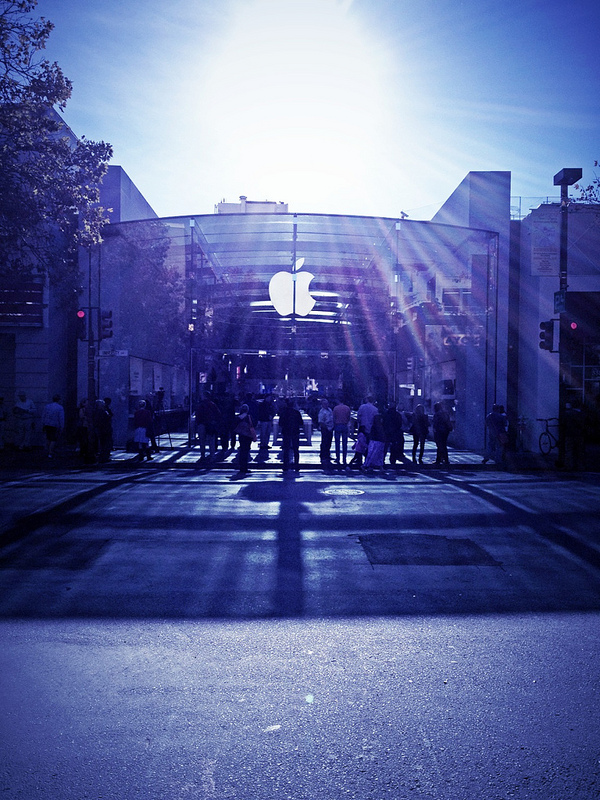
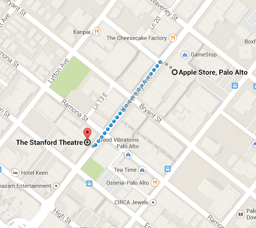
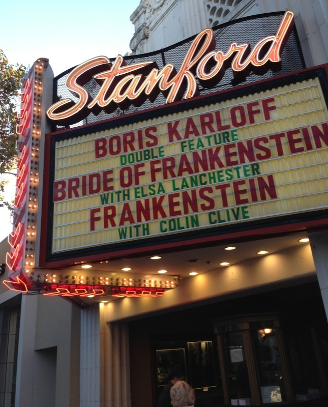

WALK
a self-guided walking tour of palo alto
Estimated Time: 4-5 hours
Total Mileage: 5.0 miles

Start: Philz Coffee

- Their "Tesora" blend supposedly took 7 years to perfect, and only Phil and his son Jacob know the recipe.
- Some say that the secret to Philz coffee drinks is the manufacturing cream - so fatty that it's not even sold in grocery stores!
- Each cup of coffee is individually brewed.
- My personal favorite: mint mohito iced coffee. They grab fresh mint leaves and fill practically half the cup with them, yum!

Rodin Sculpture Garden
- Start: Philz Coffee
- Head southwest on Forest Ave toward Alma St
- Right on Alma St
- Take the stairs under the train tracks
- Continue straight onto Palm Dr/Univeristy Ave
- Right on Campus Dr
- Left on Lomita Dr
- Right on Roth Way
- End: Rodin Sculpture Garden

- The garden and museum are home to over 200 Rodin works.
- This collection of Rodin bronzes is one of the largest in the world.
- In 1908, Rodin donated his entire collection of sculptures to the French State. In return he asked that they turn the Villa des Brillants into a museum dedicated to his work.
- The garden is open 24/7 and even has nighttime lighting!
The Oval Park
- Start: Rodin Sculpture Garden
- Walk down Roth Way toward Lomita Dr
- Right on Palm Drive
- End: The Oval Park
- If you've brough a picnic lunch, this is the place to stop! Soak up the sun, smell the flowers, and maybe even throw around a football.
- Look for the hidden horseshoe pit.
Hoover Tower

- Start: The Oval Park
- Walk a little bit out to Serra Mall
- Go straight down Serra Mall toward Lasuen St
- Right at the roundabout, take the first exit
- End: Hoover tower will be right in fron of you!
- $2 entrance fee for adults, cash only (100% worth it for the amazing views of Silicon Valley)
- Herbert Hoover and his wife were both Stanford Alumni.
- The tower houses 48 bells, the largest weighing in at 2.5 tons!
- The tower was completed in 1941, and is 285 feet tall.
Palo Alto Children's Museum & Zoo

- Start: Hoover Tower
- Head straight down Serra Mall, toward the roundabout
- Veer right at the roundabout, and take the first exit
- Left on Galvez St
- Continue onto Embarcadero Rd
- Left on Coweper St
- Right on Kellogg Ave
- Right on Middlefield
- End: Palo Alto Junior Museum and Zoo
- This stop on the tour is an adorable little hands-on nature and science museum that is fun for the child in all of us!
- The Zoo is home to more than 50 species of animals.
- Entrance is free, with a suggested donation of $5.
Hewlett-Packard House and Garage

- Start: Palo Alto Children's Museam and Zoo
- Head straight down Middlefield, toward Kellogg Ave
- Left on Addison
- End: Hewlett-Packard House and Garage

- Nicknamed the "birthplace of Silicon Valley"
- When Bill Hewlett and Dave Packard rented the 3 bedroom house and garage in 1938, they paid $45/month in rent. Today, the average rent for a 3 bedroom home in Palo Alto is about $4700 (rentometer.com)
- When HP was founded in 1939, Bill and Dave chose the name with a coin toss.
- In 2005, the buildings were restored to their 1939 conditions.
- Unfortunately, it is not open for public tours.
Apple Store

- Start: Hewlett-Packard House and Garage
- Walk straight down Addison Ave toward Waverly St
- Left on Waverly St
- Left on University Ave
- End: Apple Store

- Steve Jobs, Apple's founder and CEO for 14 years, lived in Palo Alto from 1980 - 2011, and is buried in Alta Mesa Cemetary in palo Alto.
- Apple's current CEO, Tim Cook, also lives in Palo Alto.
- There are currently over 400 Apple Retail Stores in 15 countries worldwide.
Final Destination: Stanford Theatre

- Start: Apple Store
- Walk straight down University Ave toward Bryant St
- End: The Stanford Theatre

- The Stanford Theatre first opened in 1925.
- Now, the theatre is owned by the Stanford Theatre Foundation (a non-profit).
- The theatre shows classic Hollywood films, generally from the 1920s - 1960s.
- According to paloaltohistory.com, the Stanford Theatre has accounted for 25% of the nationwide attendace of classical films, over the last decade.
- Movie tickets are only $7 for adults.